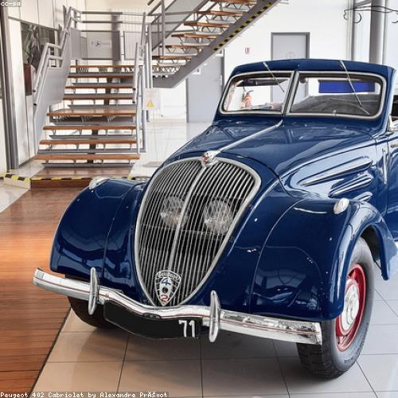

Television has proved that people will look at anything rather than each other.
Television has proved that people will look at anything rather than each other.Ann Landers
 Get money, still get money, boy, no matter by what means.
Get money, still get money, boy, no matter by what means.Ben Jonson
 The true faith discovered was When painted panel, statuary, Glass-mosaic, window-glass, Amended what was told awry By some peasant gospeler.
The true faith discovered was When painted panel, statuary, Glass-mosaic, window-glass, Amended what was told awry By some peasant gospeler.William Butler Yeats
As we read the school reports on our children, we realize a sense of relief, that can rise to delight, that, thank Heaven, nobody is reporting in this fashion on us.
John Boynton Priestley
No man but a blockhead ever wrote except for money.
Samuel Johnson
 BEHAVIOR, n. Conduct, as determined, not by principle, but by breeding.
BEHAVIOR, n. Conduct, as determined, not by principle, but by breeding.Ambrose Gwinett Bierce
 Honor's a thing too subtle for wisdom; if honor lie in eating, he's right honorable.
Honor's a thing too subtle for wisdom; if honor lie in eating, he's right honorable.Francis Beaumont
 Every great and commanding movement in the annals of the world is the triumph of enthusiasm. Nothing great was ever achieved without it.
Ralph Waldo Emerson
 I tell you that as long as I can conceive something better than myself I cannot be easy unless I am striving to bring it in to existence or clearing the way for it.
I tell you that as long as I can conceive something better than myself I cannot be easy unless I am striving to bring it in to existence or clearing the way for it.George Bernard Shaw
 People can be more forgiving than you can imagine. But you have to forgive yourself. Let go of what's bitter and move on.
People can be more forgiving than you can imagine. But you have to forgive yourself. Let go of what's bitter and move on.Bill William Henry Cosby